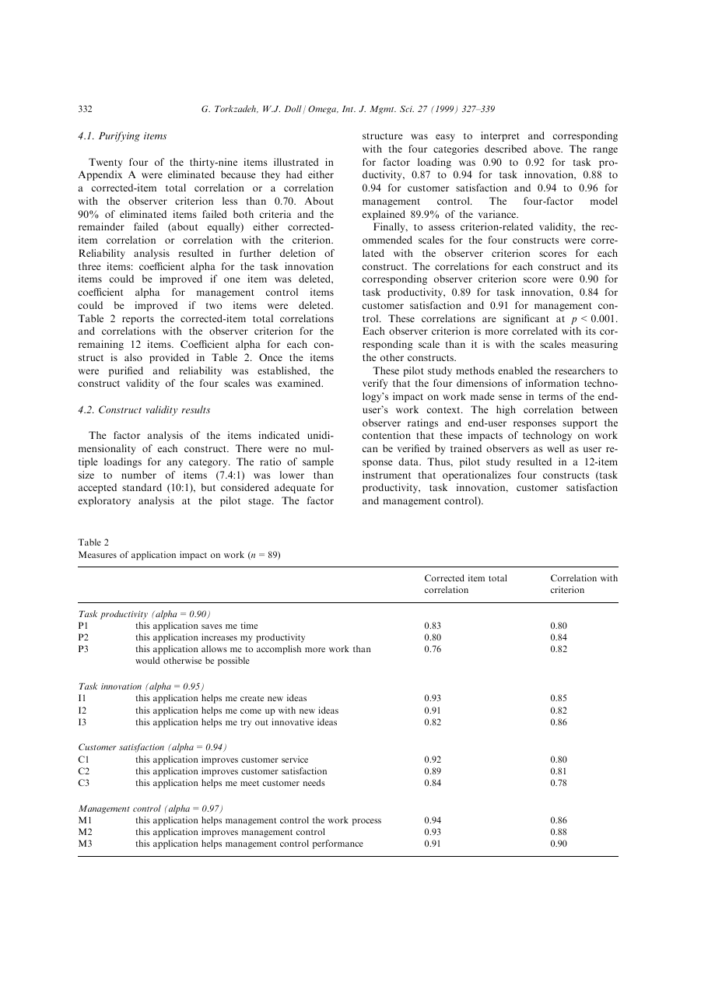
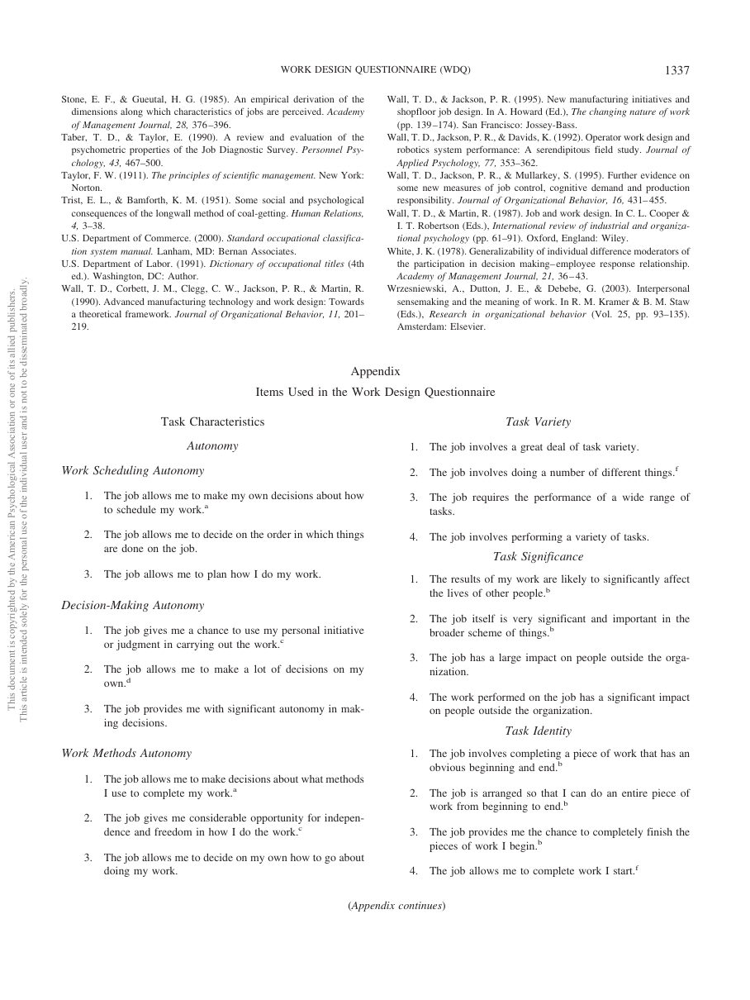
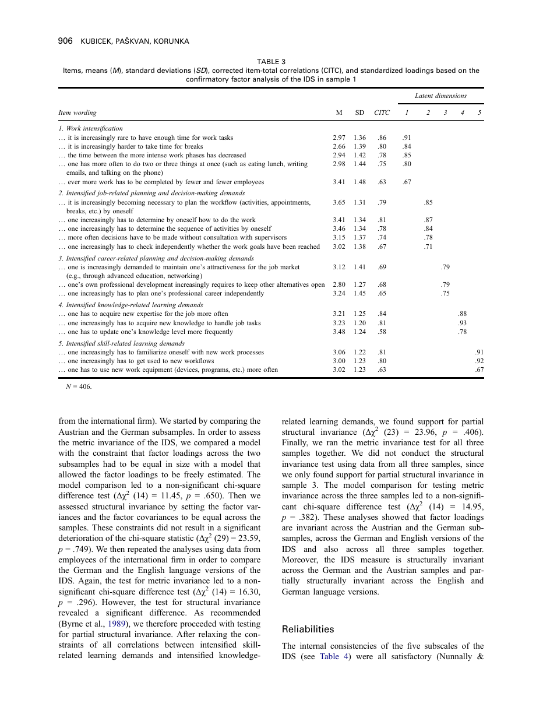
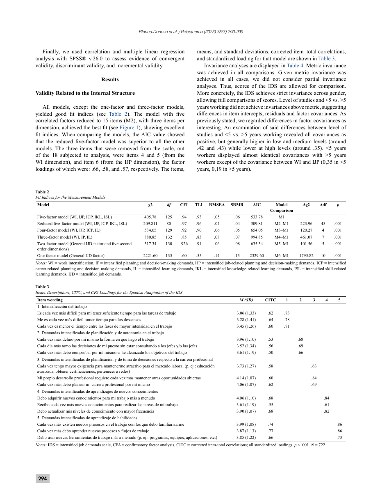
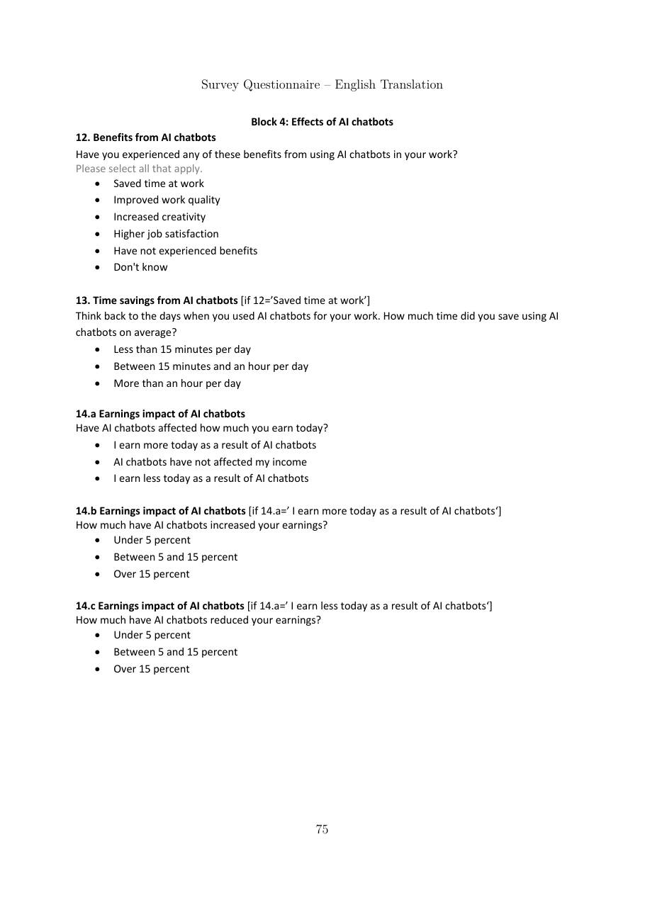

연구 1 종속변수: 원문 대조 및 문항 후보
2026-10-05 / v0.1 / 문헌·측정 정합성 1차 검토. 배포용 최종 설문이 아니다.
0. 판정 요약
| 모형의 표현 |
확인한 근거 |
현재 판정 |
| 작업효율 |
Torkzadeh & Doll (1999), Task productivity 3문항 |
재활용 우선 후보. 정확한 이름은 ‘생성형 AI의 지각된 생산성 기여’. 순수한 시간·노력 효율과 완전히 같지 않음 |
| 업무범위 |
Morgeson & Humphrey (2006), WDQ Task variety 4문항 |
현재 과업의 폭에는 적합. ‘AI 도입 이후 확대’의 검증척도로 부르면 안 됨 |
| 업무부담 |
Spector & Jex (1998), QWI 5문항 |
현재 양적 업무량 측정 후보. 원문 설문과 전체 응답앵커 확보 |
| 업무부담 증가 |
Kubicek et al. (2015), IDS의 Work intensification 5문항 |
사용자 제공 출판 PDF 확보. 5문항·응답·신뢰도 시각 대조 완료. 한국어·AI 맥락 번안은 미검증 |
| 보조 소득 결과 |
Humlum & Vestergaard, 2026-03-13 저장본 Q14a |
원문 확인. 단일문항·워킹페이퍼이며 검증된 5점 잠재척도가 아님 |
현재 수준과 변화량을 섞어 ‘AI 때문에 변화했다’고 해석하지 않는다. 원척도의 검증과 한국어·디자인·AI 맥락의 번안 검증을 구분한다.
1. 작업효율 후보: 지각된 생산성 기여
근거와 원척도
Torkzadeh, G., & Doll, W. J. (1999). The development of a tool for measuring the perceived impact of information technology on work. Omega, 27, 327–339. https://doi.org/10.1016/S0305-0483(98)00049-8
- 원문: S01 PDF (비공개 원문).
- 문항: PDF 6쪽 / 인쇄 332쪽, Table 2의 P1–P3.
- 응답: PDF 4쪽 / 인쇄 330쪽. 1 not at all, 2 a little, 3 moderately, 4 much, 5 a great deal.
- 응답 번역 초안: 1 전혀 그렇지 않음, 2 조금 그러함, 3 보통 정도로 그러함, 4 많이 그러함, 5 매우 많이 그러함. 동의가 아닌 기여의 정도다.
| 코드 |
원문 EN |
원문 의미 KO |
디자인·AI 설문 후보 KO |
| P1 |
this application saves me time |
이 응용시스템은 내 시간을 절약해 준다. |
생성형 AI는 디자인 업무에 드는 시간을 절약해 준다. |
| P2 |
this application increases my productivity |
이 응용시스템은 나의 생산성을 높여 준다. |
생성형 AI는 나의 디자인 업무 생산성을 높여 준다. |
| P3 |
this application allows me to accomplish more work than would otherwise be possible |
이 응용시스템은 그렇지 않을 때 가능한 것보다 더 많은 일을 수행할 수 있게 해 준다. |
생성형 AI를 사용하면 사용하지 않을 때보다 더 많은 디자인 업무를 수행할 수 있다. |
설문 EN 후보는 원문의 this application을 generative AI로 바꾸고 디자인 업무 준거를 명시하는 번안이다. 원문 EN과 혼동하지 않는다.
검증 근거와 적용 한계
- 파일럿 n=89의 생산성 하위척도 α=.90: Table 2, PDF 6쪽.
- 본 조사 n=409의 생산성 하위척도 α=.93: PDF 8쪽. 요인구조·수렴·판별 관련 분석을 수행했다.
- 위 수치는 이번 한국어 번안의 신뢰도가 아니다.
- P3는 수행 가능한 산출량이다. ‘실제로 떠맡은 업무량’이나 ‘업무 종류의 확대’가 아니다.
- 원문 5점을 기존 설문의 7점으로 바꾸면 응답범주 변경을 기록해야 한다. 이번에는 변경하지 않았다.
- 순수 작업효율만을 원한다면 이 3문항을 이름만 바꾸어 확정하지 않는다. 현재는 ‘지각된 생산성 기여’를 권장 명칭으로 둔다.
- 기여가 없음을 측정할 수 있지만, 효율 악화의 크기를 직접 측정하는 양방향 변화척도는 아니다.

응답 원문 · 본 조사 검증
2. 업무범위 후보: 과업다양성
근거와 원척도
Morgeson, F. P., & Humphrey, S. E. (2006). The Work Design Questionnaire (WDQ): Developing and validating a comprehensive measure for assessing job design and the nature of work. Journal of Applied Psychology, 91(6), 1321–1339. https://doi.org/10.1037/0021-9010.91.6.1321
- 원문: S02 PDF (비공개 원문).
- 문항: PDF 17쪽 / 인쇄 1337쪽, Appendix의 Task Variety 1–4.
- 원응답: 5점, strongly disagree–strongly agree. PDF 4쪽 / 인쇄 1324쪽.
- 본문에서 2·3·4점의 개별 언어 라벨은 확인하지 못했다. 임의로 ‘원문 라벨’이라고 추가하지 않는다.
| 코드 |
원문 EN |
원문 의미 KO / 현재 수준 설문 후보 |
| TV1 |
The job involves a great deal of task variety. |
내 일에는 매우 다양한 과업이 포함된다. |
| TV2 |
The job involves doing a number of different things. |
내 일에는 서로 다른 여러 가지 일을 하는 것이 포함된다. |
| TV3 |
The job requires the performance of a wide range of tasks. |
내 일은 폭넓은 범위의 과업 수행을 요구한다. |
| TV4 |
The job involves performing a variety of tasks. |
내 일에는 다양한 과업을 수행하는 것이 포함된다. |
디자인 업무를 기준으로 답하도록 문두를 좁히는 것도 번안으로 기록한다.
검증 근거와 적용 한계
- 원 연구: 540명, 243개 직무. PDF 5쪽 / 인쇄 1325쪽.
- Task variety α=.95: PDF 7쪽 / 인쇄 1327쪽, Table 3.
- 직무 특성의 요인구조와 외부 직무자료를 이용한 타당성 검토를 수행했다. 디자인·GenAI 전용 검증은 아니다.
- ‘현재 다양한 과업을 한다’는 원문이다. ‘AI 이후 다른 전문가의 업무까지 맡게 됐다’는 원문이 아니다.
- TC는 바꾸는 행동, TV는 현재 직무 특성이다. 두 척도의 판별성은 이번 표본에서 확인해야 한다.
- 이전 보조 TV를 결과변수 후보로 검토할 수는 있다. 그러나 사용자의 채택 승인 전에는 설문·모형에 자동 반영하지 않는다.
확대를 직접 묻는 별도 초안: 아직 검증되지 않음
다음은 원문 번역이 아니라 연구자 작성 후보이다. WDQ의 검증 수치를 적용할 수 없다.
| 코드 |
연구자 작성 KO |
연구자 작성 EN |
| SCOPE_CHANGE_D1 |
[기준 시점]과 비교하면, 현재 내가 담당하는 디자인 과업의 종류가 더 다양해졌다. |
Compared with [reference point], the types of design tasks I am responsible for have become more varied. |
| SCOPE_CHANGE_D2 |
[기준 시점]과 비교하면, 현재 내가 담당하는 디자인 업무의 범위가 넓어졌다. |
Compared with [reference point], the scope of design work I am responsible for has broadened. |
| SCOPE_CHANGE_D3 |
[기준 시점]과 비교하면, 현재 내가 담당하는 디자인 과업에는 이전에 맡지 않던 종류의 일이 포함된다. |
Compared with [reference point], my current design responsibilities include types of tasks I did not previously handle. |
기준 시점, 변경된 직장·프로젝트의 처리, 응답방식, 내용 중복 및 단일차원성을 먼저 검토한다. AI 도입 시점은 사람마다 다르다. 위 문항에 동의하지 않는다고 범위 축소를 뜻하지도 않는다. 확장·불변·축소를 모두 비교하려면 양방향 변화 응답을 별도 설계해야 한다.
선택지 A: 검증된 현재 수준 TV를 사용하고 연구질문도 ‘현재 업무범위와의 관련성’으로 제한한다.
선택지 B: 확대 자체가 필수이면 변화 문항을 개발·번안하고 타당화한다. 현재로서는 같은 검증 상태가 아니다.

신뢰도 표 · 응답 설명
3. 업무부담 후보
3A. 현재 양적 업무량: QWI
Spector, P. E., & Jex, S. M. (1998). Development of four self-report measures of job stressors and strain: Interpersonal Conflict at Work Scale, Organizational Constraints Scale, Quantitative Workload Inventory, and Physical Symptoms Inventory. Journal of Occupational Health Psychology, 3(4), 356–367. https://doi.org/10.1037/1076-8998.3.4.356
개발자 공식 설명 · 공식 DOC 원문 (비공개 원문) · 추출 텍스트 (비공개 원문)
| 코드 |
원문 EN |
의미 KO / 번역 초안 |
| QWI1 |
How often does your job require you to work very fast? |
업무상 매우 빠르게 일해야 하는 경우가 얼마나 자주 있습니까? |
| QWI2 |
How often does your job require you to work very hard? |
업무상 매우 강도 높게 일해야 하는 경우가 얼마나 자주 있습니까? |
| QWI3 |
How often does your job leave you with little time to get things done? |
업무를 처리할 시간이 부족한 경우가 얼마나 자주 있습니까? |
| QWI4 |
How often is there a great deal to be done? |
해야 할 일이 매우 많은 경우가 얼마나 자주 있습니까? |
| QWI5 |
How often do you have to do more work than you can do well? |
일을 제대로 해낼 수 있는 양보다 더 많은 일을 해야 하는 경우가 얼마나 자주 있습니까? |
원문 5점 응답 전체:
- Less than once per month or never / 한 달에 한 번 미만 또는 전혀 없음
- Once or twice per month / 한 달에 한두 번
- Once or twice per week / 일주일에 한두 번
- Once or twice per day / 하루에 한두 번
- Several times per day / 하루에 여러 번
검증 상태: 개발자 설명에서 15개 연구의 평균 α=.82를 확인했다. 1998 개발논문 PDF 자체는 아직 수집하지 못했다. 원문 DOC의 5문항과 전체 앵커는 직접 확인했다. 한국어 문항은 이 자료집의 번역 초안이며 공인 한국어판이 아니다.
적용 한계: 업무의 양·빈도이지 AI 이후 증가, 인지적 피로, 난이도·책임 전체가 아니다. 7점 동의척도로 바꾸면 원척도를 그대로 사용한 것이 아니다. QWI와 IDS를 한 변수의 문항으로 임의 혼합하지 않는다.
사용조건: © 1997 Paul E. Spector and Steve M. Jex, All rights reserved. 공식 사이트는 출처·저작권 표시, 연구결과 공유, 번역본 제출 조건을 안내한다. 사용조건. 본 작업은 연구자의 동의 없이 자료를 외부로 보내지 않았다. 실제 사용 전 조건을 검토한다.
3B. 변화에 가까운 후보: 업무강도 증가 / Work intensification
Kubicek, B., Paškvan, M., & Korunka, C. (2015). Development and validation of an instrument for assessing job demands arising from accelerated change: The intensification of job demands scale (IDS). European Journal of Work and Organizational Psychology, 24(6), 898–913. https://doi.org/10.1080/1359432X.2014.979160
2026-10-05 사용자 제공 출판 PDF를 확보했다. 원파일은 수정하지 않고 검토용 사본을 보관했다. 온라인 최초 게재는 2014년이며, 권·호의 출판연도는 2015년이다.
- 원문 PDF (비공개 원문): 17쪽. 문항은 PDF 10쪽 / 인쇄 906쪽, Table 3.
- 공통 문두: In the last five years… / 최근 5년 동안…. PDF 6쪽 / 인쇄 902쪽.
- 응답: 5점, 1 = not at all / 전혀 그렇지 않다, 5 = completely / 전적으로 그렇다. PDF 7쪽 / 인쇄 903쪽.
- 본문에는 2·3·4점의 개별 언어 라벨이 제시되지 않는다. 실제 조사에서 라벨이 없었다고 단정하지 않는다.
다음 KO는 원문 의미를 대조하기 위한 번역 초안이다. 검증된 한국어판이나 확정 설문이 아니다. 말줄임표는 공통 문두와 연결된다.
| 코드 |
원문 EN |
원문 의미 KO |
| WI1 |
… it is increasingly rare to have enough time for work tasks |
… 업무를 수행할 시간이 충분한 경우가 점점 드물어졌다. |
| WI2 |
… it is increasingly harder to take time for breaks |
… 휴식 시간을 내기가 점점 더 어려워졌다. |
| WI3 |
… the time between the more intense work phases has decreased |
… 업무가 더 집중되는 시기들 사이의 시간 간격이 줄어들었다. |
| WI4 |
… one has more often to do two or three things at once (such as eating lunch, writing emails, and talking on the phone) |
… 두세 가지 일을 동시에 해야 하는 경우가 더 잦아졌다(예: 점심 먹기, 이메일 쓰기, 전화 통화하기). |
| WI5 |
… ever more work has to be completed by fewer and fewer employees |
… 점점 더 적은 직원이 점점 더 많은 일을 처리해야 하게 되었다. |
원척도 검증 근거
- 전체 IDS는 19문항·5요인이다. 위 WI는 그중 5문항 하위척도다. 다른 하위척도를 연구모형에 추가한 것은 아니다.
- 개발 과정에서 인지적 탐색, 생각 말하기, 초점집단, 인사 전문가 면담을 수행했다: PDF 7쪽 / 903쪽.
- 유효 표본은 각각 406·163·193·601명, 합계 1,363명이다: PDF 8쪽 / 904쪽, Table 1. 모든 검증을 전체 표본으로 수행한 것은 아니다.
- WI의 표준화 요인부하량은 .91, .84, .85, .80, .67이다(n=406): PDF 10쪽 / 906쪽, Table 3.
- WI의 Cronbach’s α는 표본 1에서 .91, 표본 2에서 .87이다: PDF 11쪽 / 907쪽, Table 4.
- 전체 19문항·5요인 CFA: 표본 1 CFI=.96, TLI=.95, RMSEA=.067; 표본 2 CFI=.92, TLI=.93, RMSEA=.081: PDF 9쪽 / 905쪽, Table 2. WI 단독 적합도가 아니며 두 번째 표본의 적합도는 상대적으로 낮다.
- 위 수치는 원척도 연구 결과다. 이번 한국어·디자인·AI 번안의 타당성을 입증하지 않는다.
적용 전 남은 검토
- 최근 5년을 AI 활용 이후 또는 더 짧은 기간으로 바꾸면 변경을 기록하고 문항 이해를 검토한다.
- WI5의 직원 감소 준거가 1인 프리랜서에게 적합한지 확인한다. 삭제해도 원래 5문항의 검증이 그대로 유지되는 것은 아니다.
- 업무강도 증가는 피로·소진 자체와 다르다. 낮은 점수만으로 강도 감소를 판정할 수 없다.
- 회고적 변화 응답은 종단 관찰이나 AI의 인과효과를 입증하지 않는다.
- 원문 PDF는 CC BY-NC-ND 4.0을 표시한다(PDF 2쪽). 번역·번안 설문의 외부 배포 조건은 별도 확인한다.

기간·공통 문두 · 응답·개발 절차 · CFA 표 · 신뢰도 표
저자 공개 전문 · 대학 서지·동료심사 확인
3C. IDS 후속 검증: 원 개발논문과 별도로 보관
Blanco-Donoso, L. M., et al. (2023). Spanish adaptation of the Intensified Job Demands Scale (IDS). Psicothema, 35(3), 290–299. https://doi.org/10.7334/psicothema2022.347
수집 PDF (비공개 원문). 원 연구를 번안한 별도 실증연구다. 2015년 영문 원본을 대신하는 파일이 아니다.
- 표본 722명. 자영업자는 제외했다: PDF 3–4쪽.
- 18개 분석 문항에서 3개를 제외한 15문항·5요인 모형을 제시했다. WI에서는 동시작업과 인원 관련 문항을 제외했다: PDF 5쪽.
- 최종 전체 모형 CFI=.97, TLI=.96, RMSEA=.04, SRMR=.04: Table 2. WI만의 적합도나 한국어판 수치가 아니다.
- WI 3문항이 남았다는 이유로 한국 디자이너에게 그대로 3문항판을 확정하지 않는다. Table 3의 문항 언어도 스페인어다.

4. 보조 결과: 생성형 AI의 지각된 소득 영향
Humlum, A., & Vestergaard, E. Still Waters, Rapid Currents: Early Labor Market Transformation under Generative AI. 2026-03-13 저장본. 워킹페이퍼.
수집 PDF (비공개 원문). 현재 파일의 Q14a는 PDF 126쪽 / 설문 인쇄 75쪽이다. 기존 검토자료의 S08 PDF 124쪽 표기와 다르다. 판본 간 페이지 번호를 그대로 복사하지 않는다.
원문 EN: Have AI chatbots affected how much you earn today?
의미 KO: AI 챗봇이 현재 귀하가 버는 금액에 영향을 미쳤습니까?
| 원 응답 EN |
원문 의미 KO |
| I earn more today as a result of AI chatbots |
AI 챗봇으로 인해 현재 더 많이 번다. |
| AI chatbots have not affected my income |
AI 챗봇은 내 소득에 영향을 미치지 않았다. |
| I earn less today as a result of AI chatbots |
AI 챗봇으로 인해 현재 더 적게 번다. |
Q14b·c는 증가·감소 응답자에게 변화율을 별도로 묻는다. 위 3가지 응답과 후속 변화율을 하나의 원래 5점 척도라고 부를 수 없다.
연구자 번안 후보 KO: 생성형 AI를 업무에 활용한 것이 현재 귀하의 디자인 업무소득에 어떤 영향을 미쳤다고 생각하십니까?
연구자 번안 후보 EN: How do you think using generative AI at work has affected your current income from design work?
사용자 제안에 따른 5점 후보: 크게 감소 / 다소 감소 / 영향 없음 / 다소 증가 / 크게 증가. 판단 어려움·응답 거절은 별도이며 중간값으로 코딩하지 않는다.
검토: ‘영향 없음’과 ‘실제 총소득 변화 없음’은 다르다. 실제 소득 변화량을 묻고 싶다면 일정 기간 전후의 소득 질문을 별도로 설계해야 한다. 위 후보는 AI 영향에 관한 주관적 귀속이다. 워킹페이퍼의 조사 문항을 사용한 근거이지 5점 단일문항의 심리측정 타당화 근거는 아니다.

5. 논문에 쓰기 전 통과해야 할 검토
| 점검 |
현재 상태 |
필요한 조치 |
| 출처·원문·판본·위치 |
TP·WDQ·소득·IDS 개발 PDF 확보; QWI 원설문 확보 |
QWI1998 논문 PDF 추가 확보; QWI 설문 캡처 보완 |
| 원개념과 연구질문 일치 |
부분 일치 |
효율/생산성, 범위 수준/확대, 업무량/강도 증가 중 채택 정의 결정 |
| TC와 결과의 중복 |
미검증 |
전문가 내용 검토 후 파일럿 판별성 검토 |
| 번역의 의미 일치 |
번역 초안 |
독립 번역·대조, 디자인 직군 인지면담. 일반 현상 면담과 문항 이해 검증은 다름 |
| 적용 대상 |
조직 근로자·프리랜서 혼재 |
인원·상사 준거의 부적합 및 해당 없음 처리 검토 |
| 응답 척도·기준 기간 |
미확정 |
기존 TC의 최근 1주일과 결과의 현재/5년 간격 정합성 검토 |
| 한국어·AI 번안 타당성 |
미검증 |
파일럿 및 본 조사 신뢰도·수렴·판별 검토 계획 수립 |
| 통계분석 계획 |
미확정 |
측정모형 유형을 먼저 정하고 PLS 분석·조절·소득 보조 분석을 사전 지정 |
이번 결과를 ‘검증된 최종 설문’이라고 기술하지 않는다. α가 높다고 내용타당도나 인과성이 확보되는 것도 아니다. 원 개발논문의 분석법을 비교·보고하되 원 수치 재현을 한국어 번안의 합격조건으로 삼지 않는다.
6. 범위와 다음 결정
이번 단계는 후보 탐색과 원문 대조다. 기존 v0.8 설문·온라인 폼·모형 SVG는 바꾸지 않았다.
실행안 A: TP3 + TV4 + QWI5 + 소득1. 원문 접근성이 좋지만 현재 수준 중심이다. ‘AI 이후 증가’의 직접 검증이라고 쓰지 않는다.
실행안 B: TP3 + 업무범위 변화 후보 + IDS-WI + 소득1. 질문에는 가깝지만 기간·번안·척도 적합성 검증이 더 필요하다. 단순히 A보다 우월하다고 확정하지 않는다.
원문 페이지 27장을 렌더링했다. IDS 개발논문의 문항·응답·신뢰도 페이지도 시각 대조했다. QWI DOC는 텍스트 추출로 대조했으며 페이지 캡처는 미완료다. IDS 원문 확보와 한국어 번안 타당화는 별도 상태로 관리한다.